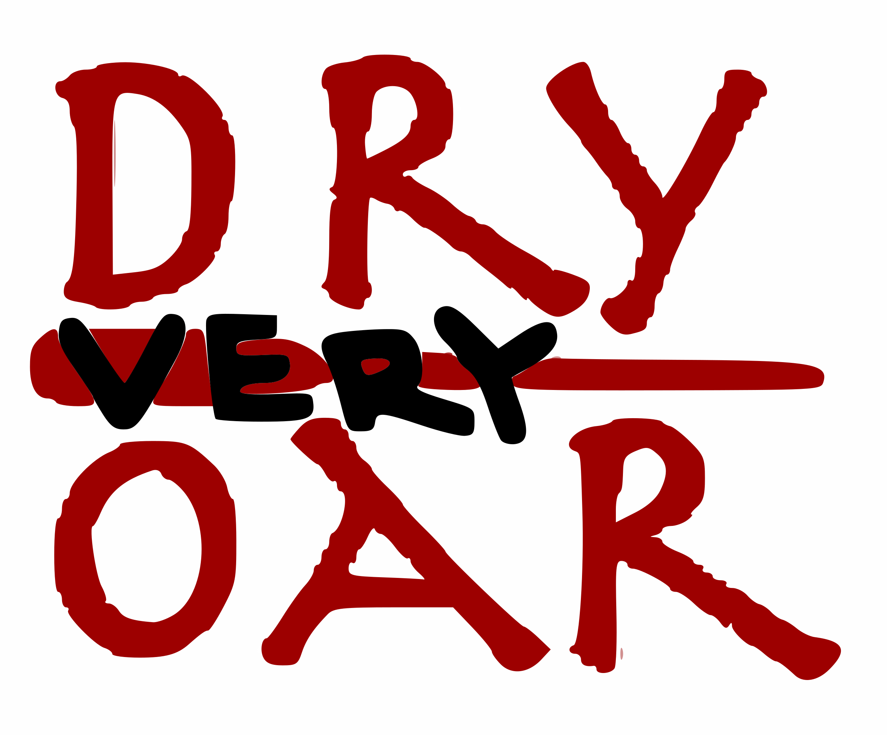

Site name
very dry oar
Site Purpose
Attracting and informing potential customers of the services very dry oar provides
Target Audience
Age- 15 to almost dead.
Eduacation- Highschool diploma and
greater
Experience- novice to intermediate
income- a lot (very premium,
as shown by font)(80k yearly)
demographic- families and older individuals
Important specific target audience- individuals who own bmw 2002's
Company Logo

Color Scheme
3f4962 primary for headers
5b2a3d secondary for paragraphs
1f1f21 triciary other information
Typography
Comic Neue. Very professional. Only one font throughout site.